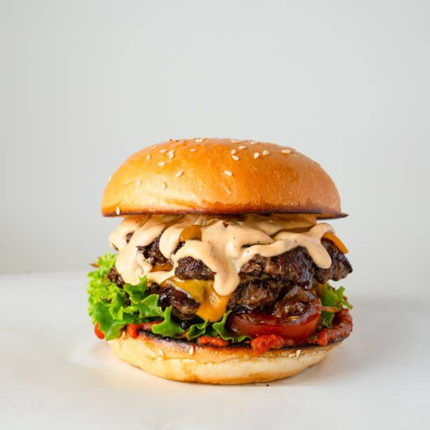
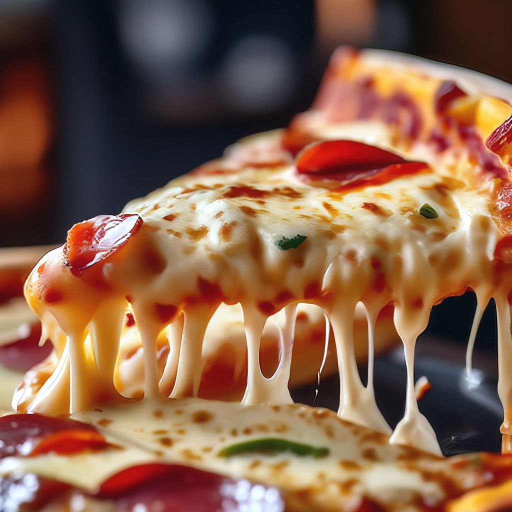

Fast food is a type of mass-produced food designed for commercial resale, with a strong priority placed on speed of service. Fast food is a commercial term, limited to food sold in a restaurant or store with frozen, preheated or precooked ingredients and served in packaging for take-out or takeaway. Fast food was created as a commercial strategy to accommodate large numbers of busy commuters, travelers and wage workers
Top 3 fast food
first meal

Beef burger with cheese and onion
What is burger?
A burger is a patty of ground beef grilled and placed between two halves of a bun. Slices of raw onion, lettuce, bacon, mayonnaise, and other ingredients add flavor.
Burgers are considered an American food but are popular around the world. In Japan, teriyaki burgers are popular. In India, vegetarian burgers are created using potato and mint instead of a meat patty.
Regardless of its content, a burger should always be properly cooked to be safe. Rare burgers carry the risk of bacterial infection and food poisoning.
second meal
Fried Chicken by Macdonald's
What is fried Chicken?
Fried chicken, also called Southern fried chicken, is a dish consisting of chicken pieces that have been coated with seasoned flour or batter and pan-fried, deep fried, pressure fried, or air fried. The breading adds a crisp coating or crust to the exterior of the chicken while retaining juices in the meat. Broiler chickens are most commonly used.
third meal

Margherita Pizza
What is pizza?
Pizza is an Italian dish typically consisting of a flat base of leavened wheat-based dough topped with tomato, cheese, and other ingredients, baked at a high temperature, traditionally in a wood-fired oven.
The term pizza was first recorded in 997 AD, in a Latin manuscript from the southern Italian town of Gaeta, in Lazio, on the border with Campania. Raffaele Esposito is often credited for creating the modern pizza in Naples.In 2009, Neapolitan pizza[7] was registered with the European Union as a traditional speciality guaranteed (TSG) dish. In 2017, the art of making Neapolitan pizza was included on UNESCO's list of intangible cultural heritage.